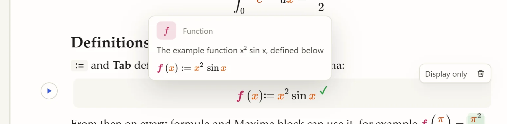
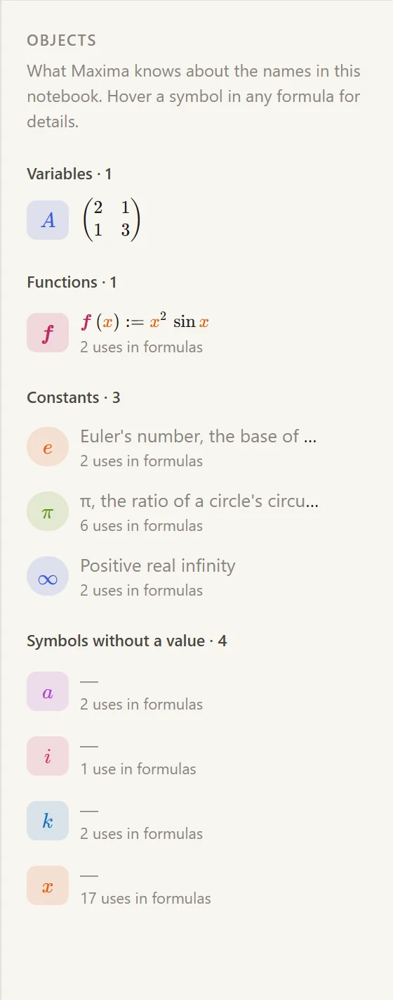
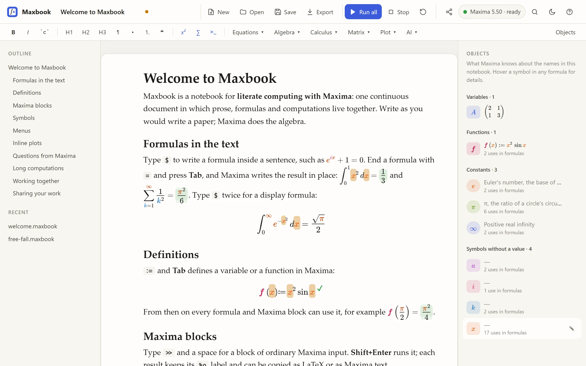

Symbols and the Objects panel
Maxbook asks Maxima about every name in your notebook and shows the answer in three places.
Colours
Every name gets its own colour, the same in every formula and every result, so you can follow a variable through a derivation at a glance.
Constants (π, e, ∞, and names you declare(c, constant)) are marked, and functions are set in bold.
If you prefer plain black formulas, search for Toggle symbol colours with Ctrl+K. Printed pages and exports always use plain colours.
Hover cards
Point at a symbol in a formula or a result to see what it is and what Maxima knows about it:

The card shows the kind (variable, function, constant, or a symbol without a value), your description if you wrote one, and the current value or definition.
The Objects panel
The panel on the right lists the names of the notebook, grouped:

-
Variables with their current value,
-
Functions with their definition,
-
Constants,
-
Symbols without a value: names used in formulas that Maxima has no value for.
Each row says how often the name occurs in the notebook’s formulas. Click a row to highlight every use of that name in the document:

Click ✎ on a row to describe the symbol in your own words ("Mass of the cart in kg"). The description is saved in the notebook and appears in the hover card, so readers of your notebook get it too.
Show or hide the panel with Objects at the right end of the format bar.
What is listed
The panel lists the notebook’s own names: what your Maxima code defines and what your formulas use.
Names that Maxima packages define when they load, for example the helper functions of the eigen package behind eigenvalues, are left out, as are Maxbook’s own helpers.
The values come from the running Maxima session, so they update after each computation; after Restart, the panel empties until you run the notebook again.